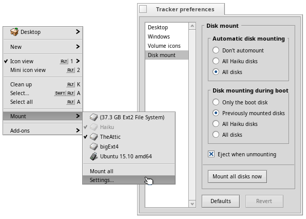

English
EnglishMounting volumes
In order to access a harddisk, CD, USB stick etc., you first have to mount the volume, that is, let the system know it's there.
This is done with a right-click on the Desktop or an already mounted volume (like the boot disk) and choosing the volume from the submenu. You find the same Mount menu in the Deskbar.
Before removing e.g. a USB stick, you have to right-click its icon and choose and wait for its icon to disappear. Otherwise you may lose data not yet written to it!

Further reading:
Mounting volumes
Mounting volumes